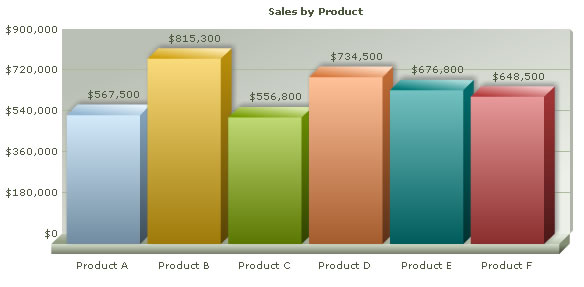
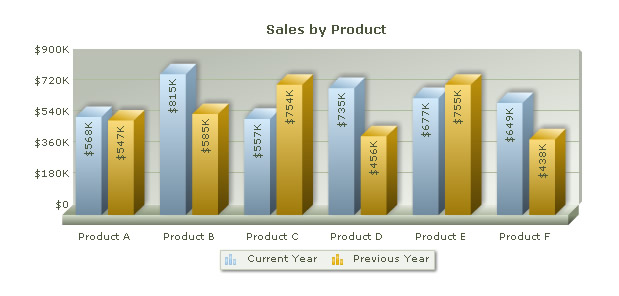

| Charting Data from an Array |
In this section, we will show you how to use FusionCharts XT and ASP to plot charts from data contained in ASP arrays. We will cover the following examples here:
Before you go further with this page, we recommend you to please see the previous section, Basic Examples, as we start off from concepts explained in that page. The code examples contained in this page are present in Download Package > Code > ASP > ArrayExample folder. |
| Creating a single series chart from data contained in arrays |
The code to create a single series chart is contained in SingleSeries.asp and can be listed as under: <%@ Language=VBScript %>
<HTML>
<HEAD>
<TITLE> FusionCharts XT - Array Example using Single Series Column 3D Chart</TITLE>
<SCRIPT LANGUAGE="Javascript" SRC="../../FusionCharts/FusionCharts.js"></SCRIPT>
</HEAD>
<!-- #INCLUDE FILE="../Includes/FusionCharts.asp" -->
<BODY>
<%
'In this example, we plot a single series chart from data contained
'in an array. The array will have two columns - first one for data label
'and the next one for data values.
'Let's store the sales data for six products in our array). We also store
'the name of products.
Dim arrData(6,2)
'Store Name of Products
arrData(0,1) = "Product A"
arrData(1,1) = "Product B"
arrData(2,1) = "Product C"
arrData(3,1) = "Product D"
arrData(4,1) = "Product E"
arrData(5,1) = "Product F"
'Store sales data
arrData(0,2) = 567500
arrData(1,2) = 815300
arrData(2,2) = 556800
arrData(3,2) = 734500
arrData(4,2) = 676800
arrData(5,2) = 648500
'Now, we need to convert this data into XML. We convert using string concatenation.
Dim strXML, i
'Initialize <chart> element
strXML = "<chart caption='Sales by Product' numberPrefix='$' formatNumberScale='0'>"
'Convert data to XML and append
For i=0 to UBound(arrData)-1
strXML = strXML & "<set label='" & arrData(i,1) & "' value='" & arrData(i,2) & "' />"
Next
'Close <chart> element
strXML = strXML & "</chart>"
'Create the chart - Column 3D Chart with data contained in strXML
Call renderChart("../../FusionCharts/Column3D.swf", "", strXML, "productSales", 600, 300, false, false)
%>
</BODY>
</HTML> |
In the above example, we first include the FusionCharts.js file to enable us to embed the chart using JavaScript. We also include FusionCharts.asp to help us easily embed the charts. Thereafter, we define an ASP array arrData to store sales data for six different products. The array has two columns - first one for data label and the next one for data values. We define a variable strXML to store the entire XML data. To build the XML, we iterate through the array and using string concatenation. Finally, we render the chart using the renderChart() function and pass strXML using Data String method . When you view the chart, you will see a chart as under:  |
| Creating a multi-series chart from data contained in arrays |
Let us now create a multi-series chart from data contained in arrays. We create a file MultiSeries.asp with the following code: <%@ Language=VBScript %>
<HTML>
<HEAD>
<TITLE> FusionCharts XT - Array Example using Multi Series Column 3D Chart </TITLE>
<SCRIPT LANGUAGE="Javascript" SRC="../../FusionCharts/FusionCharts.js"></SCRIPT>
</HEAD>
<!-- #INCLUDE FILE="../Includes/FusionCharts.asp" -->
<BODY>
<%
'In this example, we plot a multi series chart from data contained
'in an array. The array will have three columns - first one for data label (product)
'and the next two for data values. The first data value column will store sales information
'for current year and the second one for previous year.
'Let's store the sales data for 6 products in our array. We also store
'the name of products.
Dim arrData(6,3)
'Store Name of Products
arrData(0,1) = "Product A"
arrData(1,1) = "Product B"
arrData(2,1) = "Product C"
arrData(3,1) = "Product D"
arrData(4,1) = "Product E"
arrData(5,1) = "Product F"
'Store sales data for current year
arrData(0,2) = 567500
arrData(1,2) = 815300
arrData(2,2) = 556800
arrData(3,2) = 734500
arrData(4,2) = 676800
arrData(5,2) = 648500
'Store sales data for previous year
arrData(0,3) = 547300
arrData(1,3) = 584500
arrData(2,3) = 754000
arrData(3,3) = 456300
arrData(4,3) = 754500
arrData(5,3) = 437600
'Now, we need to convert this data into multi-series XML.
'We convert using string concatenation.
'strXML - Stores the entire XML
'strCategories - Stores XML for the <categories> and child <category> elements
'strDataCurr - Stores XML for current year's sales
'strDataPrev - Stores XML for previous year's sales
Dim strXML, strCategories, strDataCurr, strDataPrev, i
'Initialize <chart> element
strXML = "<chart caption='Sales by Product' numberPrefix='$' formatNumberScale='1' rotateValues='1'
placeValuesInside='1' decimals='0' >"
'Initialize <categories> element - necessary to generate a multi-series chart
strCategories = "<categories>"
'Initiate <dataset> elements
strDataCurr = "<dataset seriesName='Current Year'>"
strDataPrev = "<dataset seriesName='Previous Year'>"
'Iterate through the data
For i=0 to UBound(arrData)-1
'Append <category label='...' /> to strCategories
strCategories = strCategories & "<category label='" & arrData(i,1) & "' />"
'Add <set value='...' /> to both the datasets
strDataCurr = strDataCurr & "<set value='" & arrData(i,2) & "' />"
strDataPrev = strDataPrev & "<set value='" & arrData(i,3) & "' />"
Next
'Close <categories> element
strCategories = strCategories & "</categories>"
'Close <dataset> elements
strDataCurr = strDataCurr & "</dataset>"
strDataPrev = strDataPrev & "</dataset>"
'Assemble the entire XML now
strXML = strXML & strCategories & strDataCurr & strDataPrev & "</chart>"
'Create the chart - MS Column 3D Chart with data contained in strXML
Call renderChart("../../FusionCharts/MSColumn3D.swf", "", strXML, "productSales", 600, 300, false, false)
%>
</HTML> |
In the above example, we first include FusionCharts.js file to enable us embed the chart using JavaScript. We also include FusionCharts.asp to help us easily embed the charts. Thereafter, we define an ASP array arrData to store sales data for six different products. The array has three columns - first one for data label (product) and the next two for data values. The first data value column will store sales information for current year and the second one for previous year. We define a variable strXML to store the entire XML data. We also define strCategories, strDataCurr and strDataPrev variables to store XML data for categories elements, current year's dataset and previous year's dataset respectively. To build the XML, we iterate through the array and using string concatenation. We concatenate the entire XML finally in strXML. Finally, we render the chart using the renderChart() function and pass strXML as dataStr. When you view the chart, you will see a chart as under:  In Download Package > Code > ASP > ArrayExample, we have more example codes to create Stacked and Combination Charts too, which have not been explained here, as they are similar in concept. You can directly see the code if you want to. |